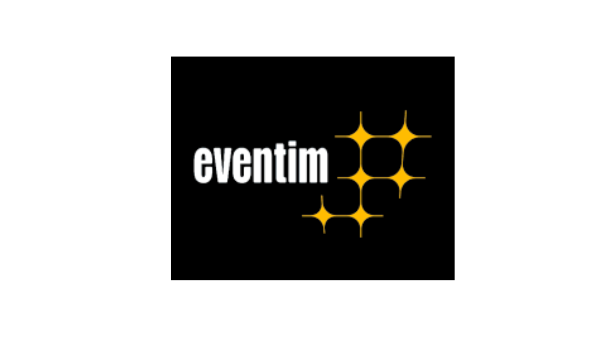

Nós somos um canal que dialoga entre os torcedores dos quatro maiores times do Rio, e os clubes em si.
Sabemos que ultimamente, estão tendo vários desentendimentos entre torcidas, ou até mesmo com a mesma torcida, e acreditamos que esse site pode ajudar a achar os resposáveis por tais problemas.
Além de ajudar a achar os resposáveis por problemas, uma outra acessibilidade que nosso site pode trazer é a velocidade no acesso aos estádios, com base em um login e que pode ser verificado com mais facilidade nos arredores dos estádios.
Se você é um torcedor apaixonado pelo Vasco da Gama, certamente já ouviu falar do programa de Sócio Torcedor do clube. O Sócio Torcedor é uma iniciativa que visa estreitar os laços entre os torcedores e o time, oferecendo benefícios exclusivos e contribuindo para o desenvolvimento e fortalecimento do clube.
Ser um Sócio Torcedor do Vasco da Gama vai além de simplesmente torcer pelo time; é uma oportunidade de se envolver de maneira mais ativa com o clube e se tornar parte fundamental do seu crescimento. Ao aderir ao programa, os torcedores têm a chance de demonstrar seu apoio incondicional e contribuir diretamente para o sucesso e a sustentabilidade do Vasco.
Os benefícios de ser um Sócio Torcedor do Vasco são variados e abrangentes. Além de ter acesso prioritário a ingressos para os jogos, o sócio tem a oportunidade de participar de eventos exclusivos, como treinos abertos, encontros com jogadores e até mesmo viagens junto ao time. Essas experiências únicas proporcionam um contato mais próximo com os ídolos do clube e uma conexão ainda mais forte com a história e a paixão vascaína.
Além disso, o programa de Sócio Torcedor oferece descontos e vantagens em diversos produtos e serviços, como lojas oficiais, parceiros comerciais e até mesmo em programas de lazer e entretenimento. Essas vantagens exclusivas tornam a experiência de ser Sócio Torcedor ainda mais gratificante, recompensando a lealdade e o apoio dos torcedores.
No entanto, ser um Sócio Torcedor do Vasco da Gama vai além dos benefícios pessoais. Ao aderir ao programa, os torcedores contribuem diretamente para o desenvolvimento do clube, ajudando a financiar ações e investimentos nas categorias de base, na estrutura do estádio e na contratação de jogadores de qualidade. Dessa forma, os Sócios Torcedores têm um papel ativo na construção do futuro do Vasco, garantindo que o clube possa competir em alto nível e alcançar novas conquistas.
Neste projeto de vídeo, exploraremos a vida e o trabalho do renomado pintor Frans Hals. Com foco em seu estilo único, influência artística e contribuições para a pintura do século XVII, o vídeo tem como objetivo educar e inspirar os espectadores a descobrirem a beleza e a importância do legado deixado por esse grande mestre holandês.
O vídeo mergulha na história de Frans Hals, desde seus primeiros anos até seu impacto duradouro no mundo da arte. Por meio de uma narração envolvente e de imagens cuidadosamente selecionadas, o vídeo revela a vida pessoal de Hals, suas influências artísticas e o contexto cultural em que ele viveu.
Bem-vindo ao site oficial da Apple, o seu portal de entrada para um universo de inovação, criatividade e excelência tecnológica. Aqui, você encontrará uma ampla gama de produtos revolucionários, serviços inovadores e experiências que vão além das suas expectativas.
O site da Apple tem como objetivo principal conectar você a uma variedade de dispositivos eletrônicos de ponta, como iPhones, iPads, Macs, Apple Watches e muito mais. Cada produto é cuidadosamente projetado e desenvolvido para oferecer desempenho excepcional, design elegante e recursos avançados, proporcionando uma experiência tecnológica incomparável.
Além de oferecer uma gama completa de produtos, o site da Apple também é o seu guia para explorar os serviços exclusivos da marca. Desde o iCloud, que permite armazenar e acessar seus arquivos em todos os dispositivos, até a App Store, uma fonte inesgotável de aplicativos e jogos emocionantes, você encontrará soluções versáteis que se integram perfeitamente ao seu estilo de vida digital.
Mas o site da Apple vai além de apenas apresentar produtos e serviços. É um espaço onde você pode mergulhar no mundo da criatividade e da expressão pessoal. Descubra o poder do software de edição de vídeo e música com o iMovie e o GarageBand, ou liberte sua criatividade com o conjunto de aplicativos iWork, que inclui o Pages, o Numbers e o Keynote. Aqui, você encontrará todas as ferramentas necessárias para criar, colaborar e compartilhar suas ideias de maneira fácil e intuitiva.
Ao navegar pelo site da Apple, você terá acesso a informações detalhadas sobre cada produto, com especificações técnicas, avaliações de usuários e guias de uso. Além disso, você poderá encontrar suporte técnico, obter respostas para suas dúvidas e participar de uma comunidade de usuários entusiastas e apaixonados pela marca.
Então, não espere mais. Explore o site da Apple e descubra como a tecnologia pode transformar a sua vida. Desperte sua criatividade, simplifique suas tarefas diárias e eleve sua experiência tecnológica a um novo patamar. A Apple está aqui para ajudá-lo a explorar seu potencial ilimitado e proporcionar momentos de pura inspiração em cada interação. Bem-vindo à revolução Apple!
Bem-vindo ao site da Eventim, o seu portal completo para descobrir, explorar e adquirir ingressos para os melhores eventos ao redor do mundo. Aqui, você encontrará uma plataforma dinâmica e intuitiva, projetada para oferecer uma experiência única na busca e compra de ingressos para shows, espetáculos, festivais, eventos esportivos e muito mais.
O site da Eventim é o seu guia definitivo para estar sempre atualizado sobre os eventos mais empolgantes e emocionantes. Com uma ampla variedade de opções, desde os maiores artistas internacionais até as atrações locais mais populares, nossa plataforma oferece acesso direto a um catálogo diversificado de eventos culturais e de entretenimento.
Além de oferecer uma extensa lista de eventos, o site da Eventim é uma fonte confiável para garantir seus ingressos de forma segura e conveniente. Nosso sistema de compra online é rápido, fácil e protegido, garantindo que você possa adquirir seus ingressos com tranquilidade, seja para um evento próximo ou com meses de antecedência.
Ao explorar o site da Eventim, você encontrará recursos adicionais para facilitar sua experiência. Informações detalhadas sobre os eventos, incluindo datas, horários, localizações e mapas de assentos, ajudam você a tomar decisões informadas. Além disso, você poderá encontrar opções de entrega flexíveis e até mesmo opções de reembolso ou troca em caso de imprevistos.
Nossa missão é proporcionar a você uma jornada memorável, desde a descoberta do evento até o momento em que você entra pela porta e vive uma experiência inesquecível. O site da Eventim está aqui para ajudar a tornar seus planos e desejos uma realidade, permitindo que você explore seu amor pela música, pelo teatro, pelo esporte e pela cultura de forma única.
Então, não perca tempo. Comece a explorar o site da Eventim e mergulhe em um mundo de entretenimento emocionante. Descubra os eventos mais aguardados, garanta seus ingressos e prepare-se para momentos que irão marcar sua vida. A Eventim está aqui para fazer parte da sua jornada cultural e garantir que você aproveite ao máximo cada experiência. Bem-vindo à sua fonte de ingressos e entretenimento!